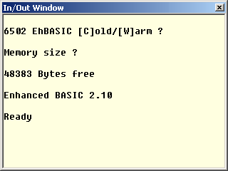
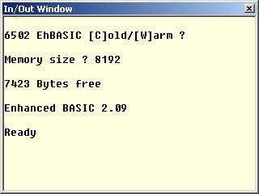

|
|
Starting Enhanced BASIC By Lee Davison. |
|
Starting EhBASIC will mostly depend on how you set up your system to start it. The following assumes you are trying to run EhBASIC using the example monitor and Michal Kowalski's 6502 simulator, though this should not differ too much from the startup of EhBASIC on a real system.
Unpack the .zip source to a directory and run the 6502 simulator. Open min_mon.asm from the directory where you unzipped it. Select assemble [F7]. Run the debugger [F6]. Make sure the I/O window is open. Press [CTRL], [SHIFT] and R to reset the simulated processor.
You should then be presented with the [C]old/[W]arm prompt as seen here. As the simulator has just been started you should now press C for a cold start.
This should present you with the Memory size ? prompt. Now type either carriage return, in which case EhBASIC calculates available memory space automatically, or enter the total size of the memory in either decimal, hex or binary followed by a carriage return.
E.g. to set the physical memory size to 8k bytes.
In decimal ..
Memory size ? 8192
.. or in hex ..
Memory size ? $2000
.. or in binary.
Memory size ? %10000000000000EhBASICs program memory is then allocated from Ram_base, which is usually $0300, up to the limit specified. Any remaining RAM, or any RAM not continuous from EhBASICs memory, may be used to contain user subroutines or data.
If you did not enter a number greater than the minimum required to run EhBASIC, or there is not the minimum memory present, then EhBASIC will return to the Memory size ? prompt.
Do not type a number larger than the physical memory present. EhBASIC assumes you know what you are doing and does not check the specified memory size. Trying to use non existent RAM will, at best, corrupt your string variables. This check can easily be implemented, the code is already in place but is commented out. See the source for more details.
There is no Terminal width ? prompt as with some BASICs, the default is for no terminal width limit to be set. However if you wish to set a terminal width, and a TAB step size, there is a WIDTH command available, see WIDTH in the EhBASIC language reference.
If the memory sizing was successful then EhBASIC will respond with the total number of bytes available for both programmes and variables and then the Ready prompt.
The display should look something like the image on the right.
You are now ready to start using EhBASIC.
To restart EhBASIC After a reset, assuming you have at some time performed a cold start, if you have set up a Cold/Warm start request just press W.
If all is well, and sometimes if not, EhBASIC will respond with the Ready prompt like that shown here.
After a warn start, if the reset was not caused by a program running amok, the program and all the variables used, will be unchanged. You will not though be able to use CONT to continue program execution.
So you are now ready to program in EhBASIC, check the language reference for details.
| Last page update: 9th April, 2005. | e-mail me
 |